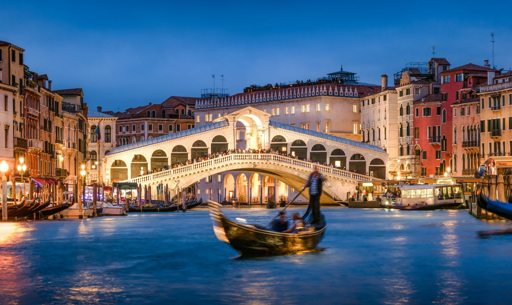
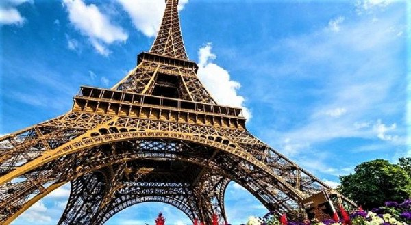
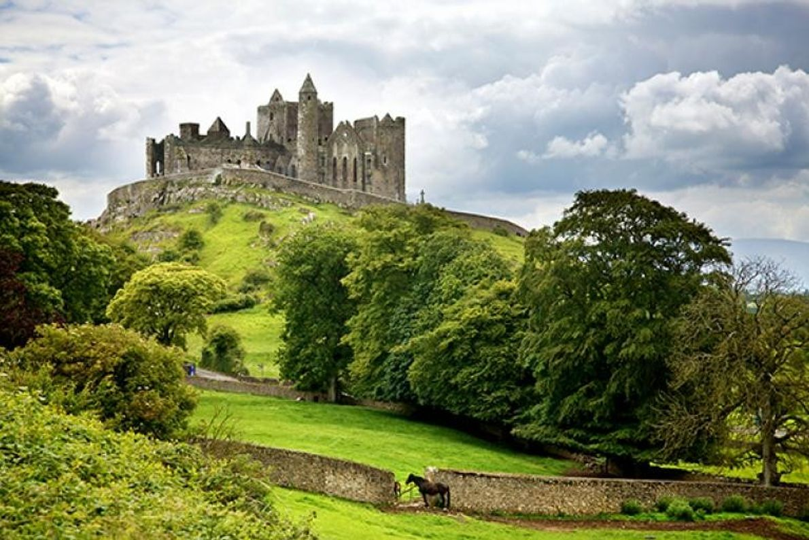

Italia, país europeo con una larga costa mediterránea, influyó considerablemente en la cultura y la cocina occidental. Su capital, Roma, es hogar del Vaticano, de ruinas antiguas y de obras de arte emblemáticas. Otras ciudades importantes son Florencia, con obras maestras del renacimiento, como el "David" de Miguel Ángel y el Domo de Brunelleschi; Venecia, la ciudad de los canales; y Milán, la capital italiana de la moda.

Pierde la noción del tiempo en el barrio de Saint Germain y déjate sorprender por las tiendas vintage, los cafecitos divinos, las librerías de cuento y las boutiques que decoran sus calles.
Detente en el salón de té Angelina, donde Coco Chanel solía tomar a diario una taza de chocolate caliente. Los interiores del lugar son asombrosos, con un aire de sofisticación, pero a la vez muy acogedores.

Pierde la noción del tiempo en el barrio de Saint Germain y déjate sorprender por las tiendas vintage, los cafecitos divinos, las librerías de cuento y las boutiques que decoran sus calles.
Detente en el salón de té Angelina, donde Coco Chanel solía tomar a diario una taza de chocolate caliente. Los interiores del lugar son asombrosos, con un aire de sofisticación, pero a la vez muy acogedores.
